Công cụ tự định nghĩa là một loại công cụ đặc biệt, cho phép người dùng tự định nghĩa và đóng gói một nhóm công cụ theo nhu cầu để hoàn thành chức năng mong muốn. Người dùng có thể sử dụng nó như một công cụ đặc biệt trong dự án. Đồng thời, công cụ tự định nghĩa còn hỗ trợ chức năng nhập/xuất để cho phép công cụ tự định nghĩa được sử dụng xuyên phần mềm và xuyên các giải pháp khác nhau.
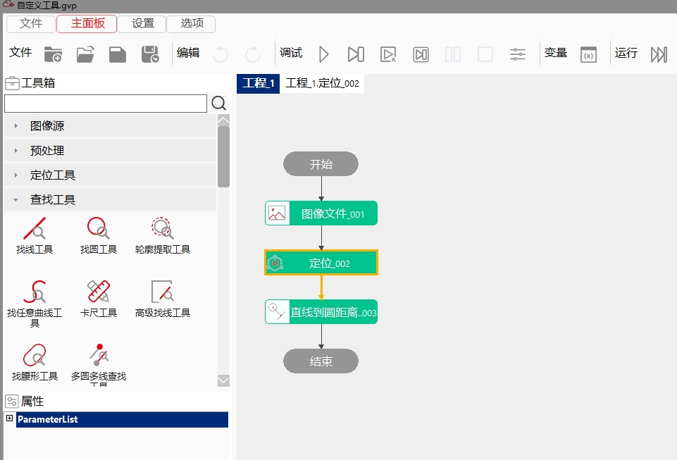
1. Trong các giải pháp thị giác công nghiệp phức tạp, thường có cùng một nhóm công cụ được sử dụng nhiều lần trong sơ đồ quy trình, dẫn đến khối lượng công việc lớn về phát triển, gỡ lỗi và bảo trì dự án. công cụ tự định nghĩa có thể giải quyết rất tốt vấn đề này.
2. Trong quá trình phát triển ứng dụng theo ngành, thường có một số nhóm công cụ thực hiện chức năng chung được sử dụng trong nhiều giải pháp khác nhau. Thông qua chức năng nhập/xuất của công cụ tự định nghĩa, các chức năng chung này có thể được phát triển một lần và tái sử dụng ở nhiều nơi, từ đó nâng cao hiệu quả phát triển một cách hiệu quả.
công cụ tự định nghĩa chủ yếu bao gồm tham số đầu vào, tham số đầu ra và các công cụ trong sơ đồ quy trình nội bộ. công cụ tự định nghĩa tương tự như công cụ thông thường, có thể liên kết chuỗi tham số và thực thi. công cụ tự định nghĩa không có tham số thuộc tính.
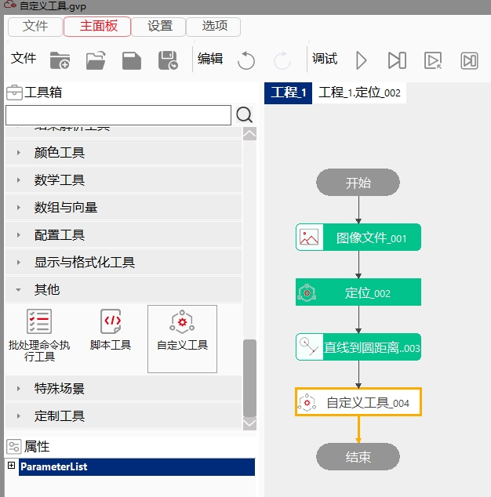
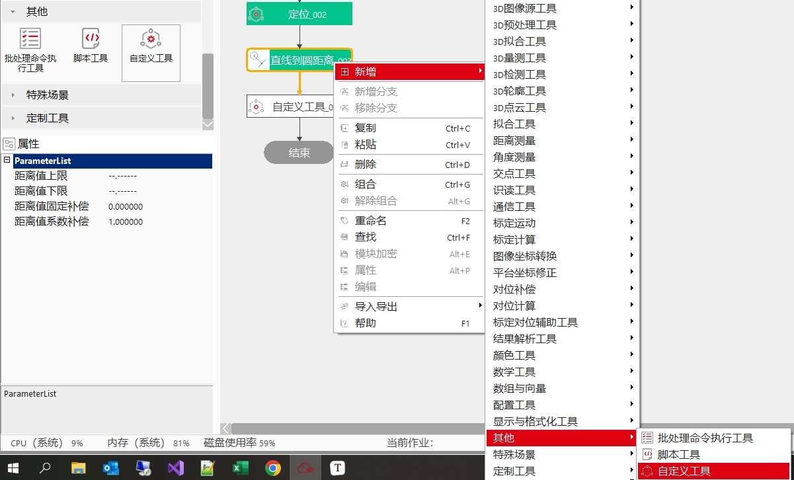
1. Trong sơ đồ quy trình, nhấp chuột phải vào tùy chỉnh công cụ và chọn chỉnh sửa từ menu
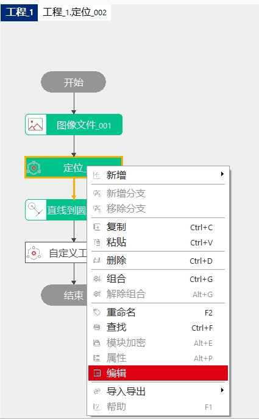
2. Chỉnh sửa tùy chỉnh công cụ
Lưu ý: một số công cụ không được hỗ trợ sử dụng bên trong tùy chỉnh công cụ, vui lòng tham khảo danh sách công cụ không được hỗ trợ trong phần Câu hỏi thường gặp phía sau.
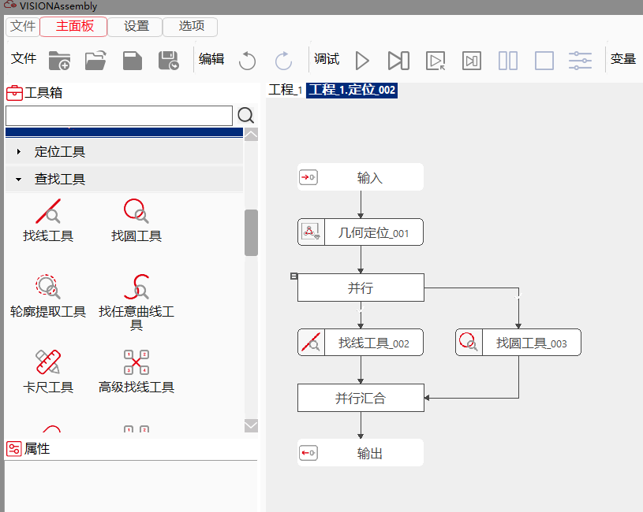
Tham số đầu vào được người dùng tự định nghĩa và cấu hình, hỗ trợ dữ liệu kiểu hình ảnh (scImage8, scImage24, scRangeImage16, Measure3D::GsProfileData), các kiểu dữ liệu cơ bản (bool, float, double, int, string, v.v.). Tối đa hỗ trợ cấu hình 50 tham số đầu vào.
1. Cấu hình tham số đầu vào
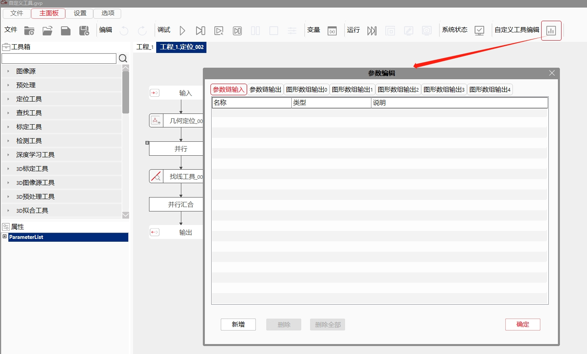
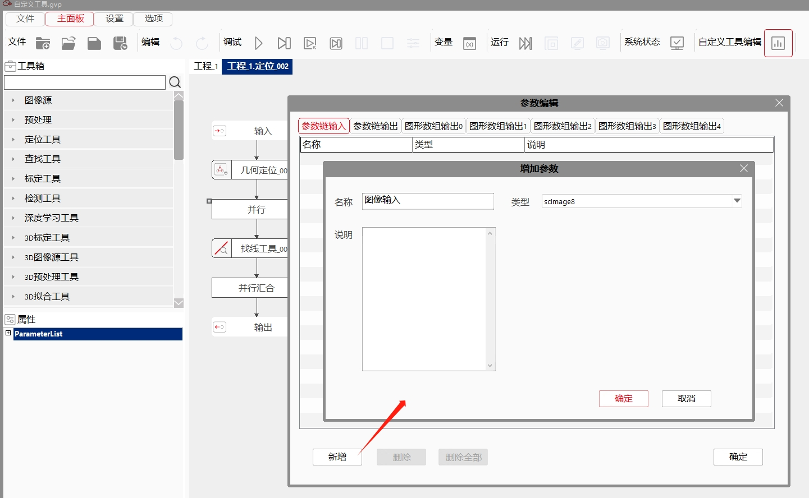
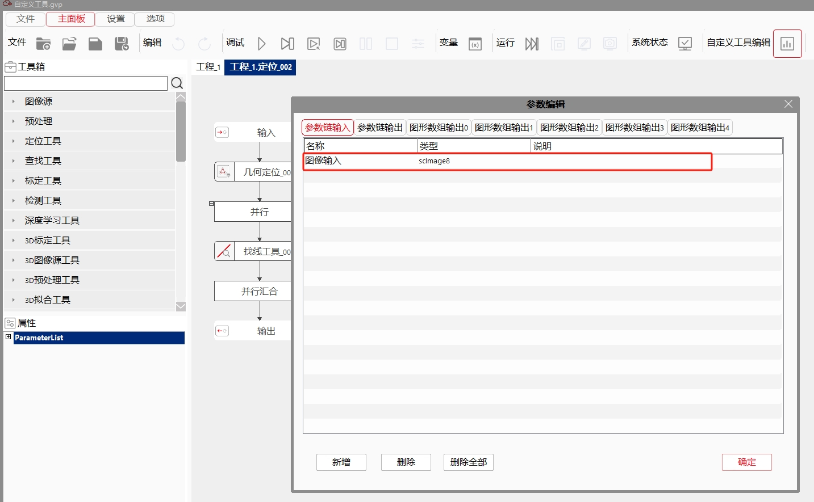
2. Cấu hình tham số đầu ra
Bất kỳ tham số đầu ra nào của công cụ bên trong tùy chỉnh công cụ đều có thể được cấu hình thành tham số đầu ra của tùy chỉnh công cụ. Tối đa hỗ trợ cấu hình 50 tham số đầu ra.
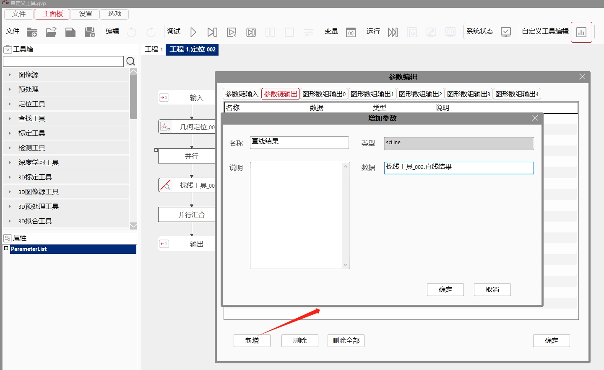
3. Cấu hình tham số đầu ra mảng đồ họa
Bất kỳ tham số đầu ra đồ họa nào của công cụ bên trong tùy chỉnh công cụ đều có thể được thêm vào danh sách đầu ra mảng đồ họa của tùy chỉnh công cụ. Tối đa hỗ trợ cấu hình 5 tham số đầu ra mảng đồ họa. Mỗi nhóm đồ họa tối đa có thể thêm 2000 mục, công cụ không phải script có thể thêm 1000 mục, công cụ script có thể thêm 1000 mục.
Lưu ý: GUI được thêm bằng script chỉ hiển thị trong danh sách đầu ra mảng đồ họa sau khi script được thực thi; hơn nữa, những GUI này không hỗ trợ xóa bằng nút “Xóa” hoặc “Xóa tất cả”, chỉ có thể sửa đổi hoặc chú thích mã liên quan của công cụ script.
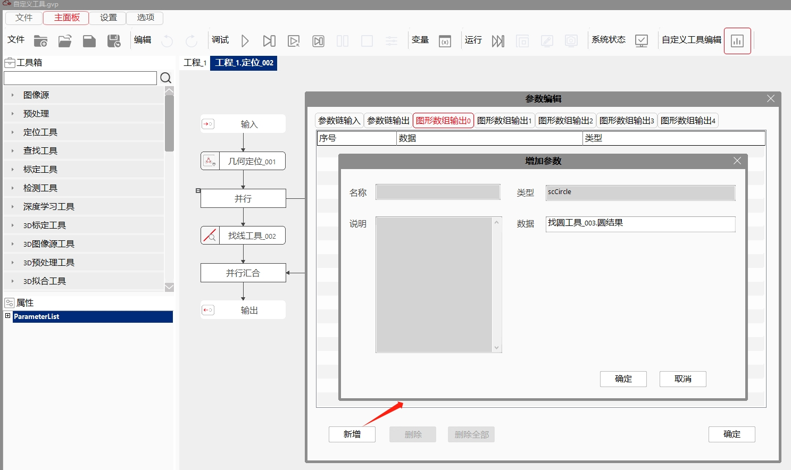
Sau khi cấu hình xong tham số đầu vào và đầu ra của tùy chỉnh công cụ, có thể cấu hình liên kết tham số cho tùy chỉnh công cụ trong dự án chính. Cách thức giống như công cụ thông thường.
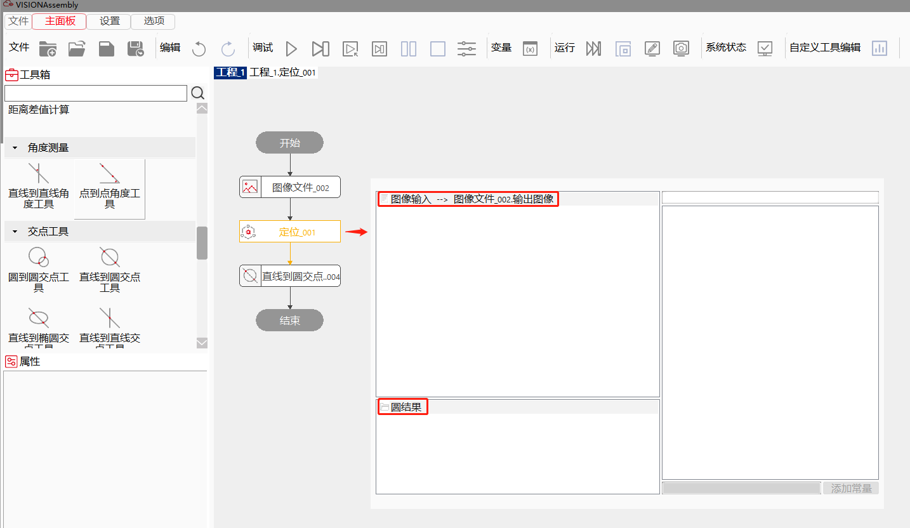
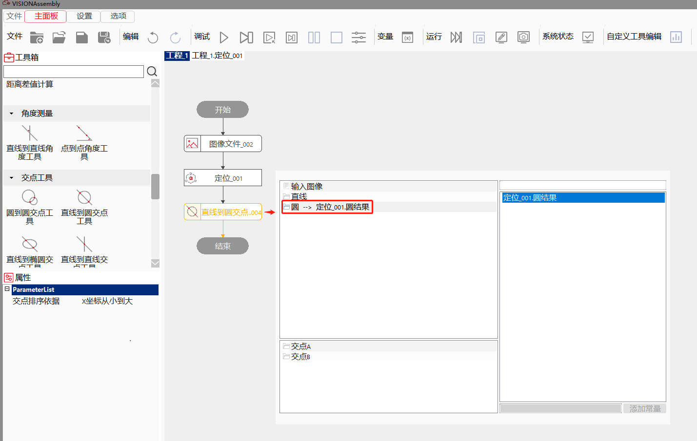
Sau khi cấu hình xong chuỗi tham số cho tùy chỉnh công cụ, có thể chạy tùy chỉnh công cụ. Nếu tất cả công cụ bên trong tùy chỉnh công cụ thực thi thành công, thì tùy chỉnh công cụ được coi là chạy thành công. Nếu có công cụ bên trong tùy chỉnh công cụ thực thi thất bại, thì tùy chỉnh công cụ được coi là chạy thất bại.
Khi gỡ lỗi từng bước trong dự án chính, sau khi thực thi đến nguyên tố tùy chỉnh công cụ, bước tiếp theo sẽ bắt đầu thực thi các công cụ bên trong tùy chỉnh công cụ. Lúc này, nhấp chuột phải vào nguyên tố tùy chỉnh công cụ và chọn chỉnh sửa từ menu để vào giao diện chỉnh sửa tùy chỉnh công cụ, từ đó có thể xem tình trạng thực thi từng bước của các công cụ bên trong. Ngoài ra, trong giao diện chỉnh sửa tùy chỉnh công cụ, cũng có thể trực tiếp khởi động gỡ lỗi hoặc chạy, nhưng lúc này dữ liệu tham số đầu vào sử dụng là dữ liệu được lưu đệm từ lần thực thi trước.
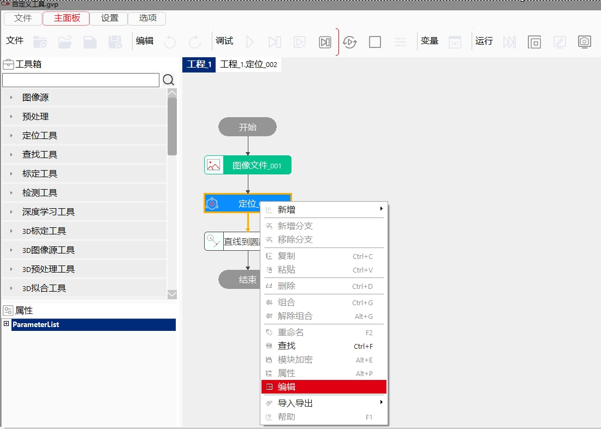
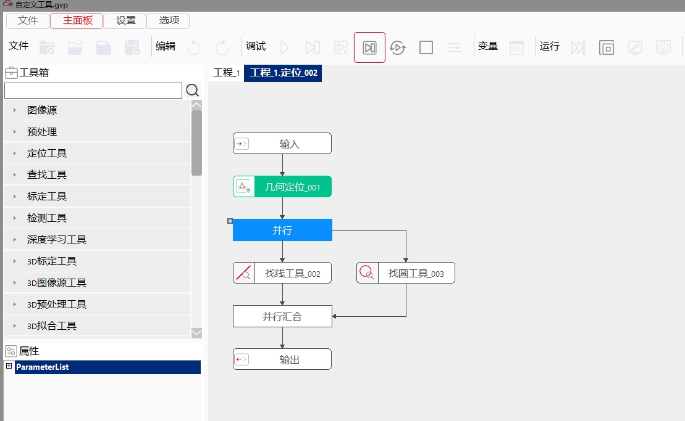
Chọn tùy chỉnh công cụ, trong menu chuột phải, chọn Nhập/Xuất -> Xuất thông tin công cụ, có thể xuất thông tin của tùy chỉnh công cụ.
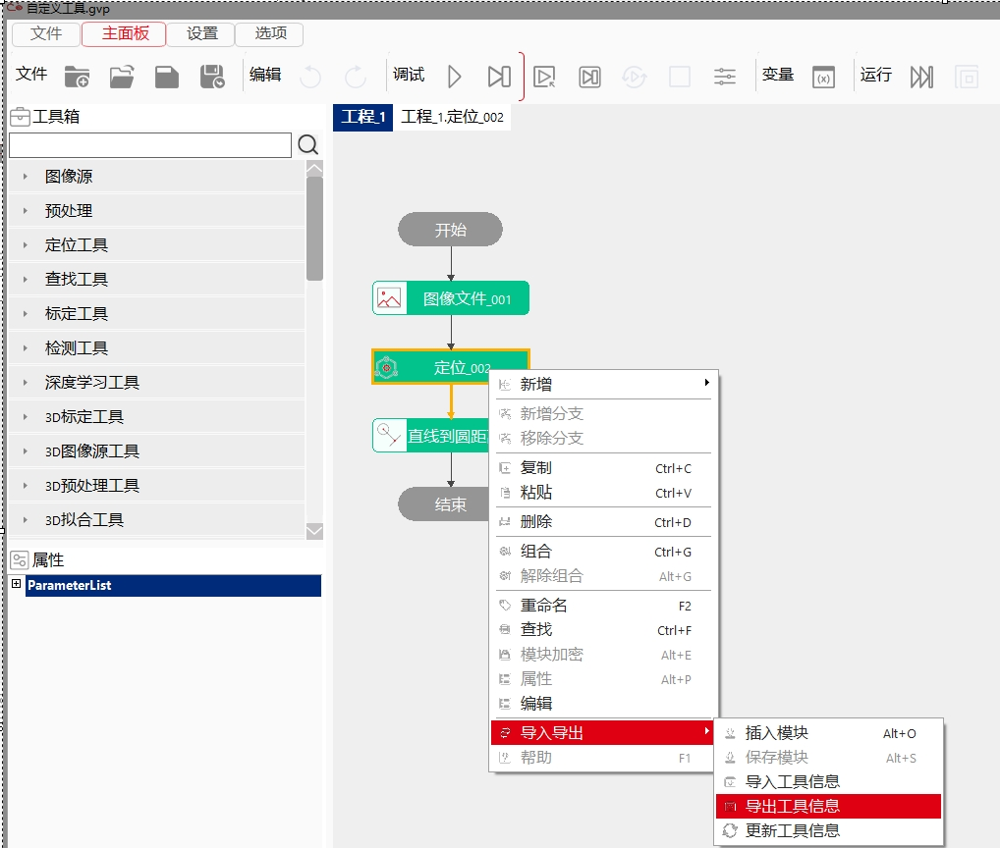
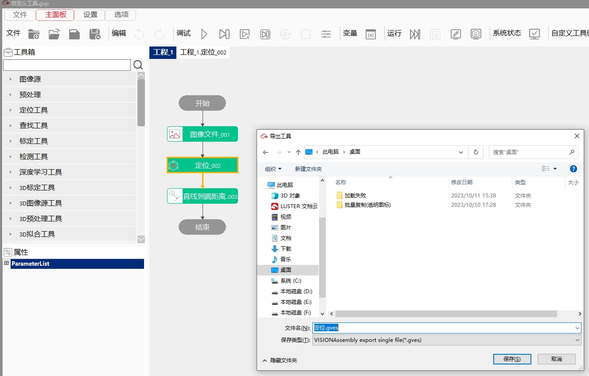
Chọn tùy chỉnh công cụ, trong menu chuột phải, chọn Nhập/Xuất -> Nhập thông tin công cụ, có thể nhập thông tin của tùy chỉnh công cụ. Dữ liệu nội bộ cũ sẽ bị xóa và dữ liệu nội bộ sẽ được tạo lại theo tệp gves đã nhập. Lưu ý: tham số của công cụ này và các công cụ liên quan có thể bị ngắt liên kết.
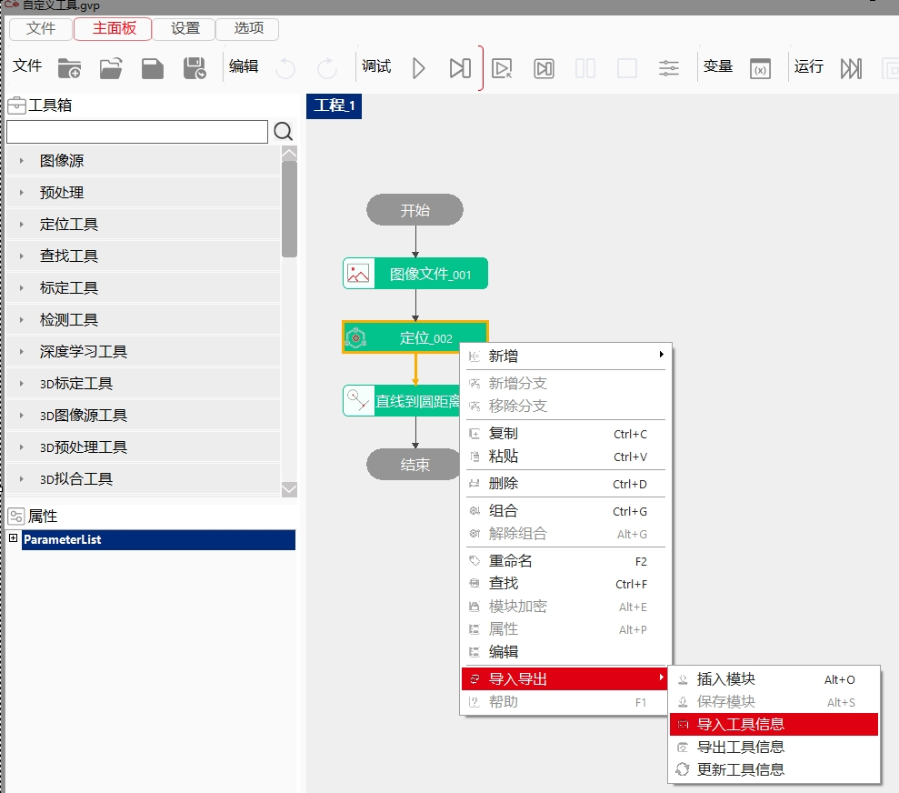
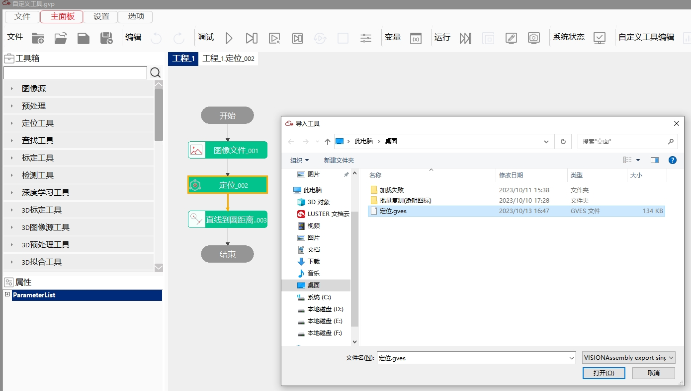
Nếu bên trong tùy chỉnh công cụ có thêm công cụ, sẽ hiện cửa sổ cấu hình cập nhật dữ liệu tùy chỉnh công cụ, cần chọn công cụ cập nhật dữ liệu. Nếu một số công cụ cần cập nhật dữ liệu, hãy đánh dấu vào hộp kiểm “Sử dụng dữ liệu bảng B”, nếu không đánh dấu thì giữ nguyên dữ liệu công cụ trước khi nhập. Nhấn nút "Xác nhận" thì cấu hình mới nhất sẽ được giữ lại và nhập theo cấu hình mới nhất; nhấn nút “Hủy” thì cấu hình đã sửa sẽ không được giữ lại và nhập theo cấu hình cũ.
Lưu ý: công cụ cập nhật dữ liệu chỉ cần cấu hình khi tên giống nhau, công cụ có tên khác nhau sẽ sử dụng dữ liệu trong tệp gves; nếu dữ liệu công cụ trước khi nhập ảnh hưởng đến chuỗi tham số của sơ đồ quy trình, tức là trạng thái bật/tắt của chuỗi tham số, có thể dẫn đến lỗi thực thi của tùy chỉnh công cụ, cần phải sửa thủ công tham số của loại công cụ này; công cụ script không khuyến nghị giữ dữ liệu cũ.
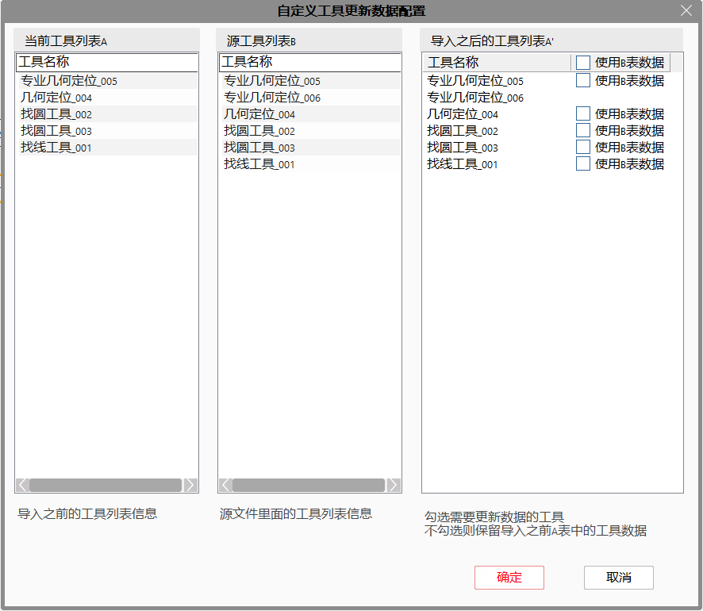
Chọn tùy chỉnh công cụ, trong menu chuột phải, chọn Nhập/Xuất -> Cập nhật thông tin công cụ, có thể cập nhật thông tin của tùy chỉnh công cụ. Dữ liệu nội bộ cũ sẽ bị xóa và dữ liệu nội bộ sẽ được tạo lại theo tệp gves đã nhập. Lưu ý: ID trong tệp gves phải giống với ID của công cụ được cập nhật, và chỉ khi số lượng tham số và chữ ký hoàn toàn nhất quán thì mới cập nhật thành công. Hiện tại chức năng này chỉ dùng cho việc sao chép hàng loạt.
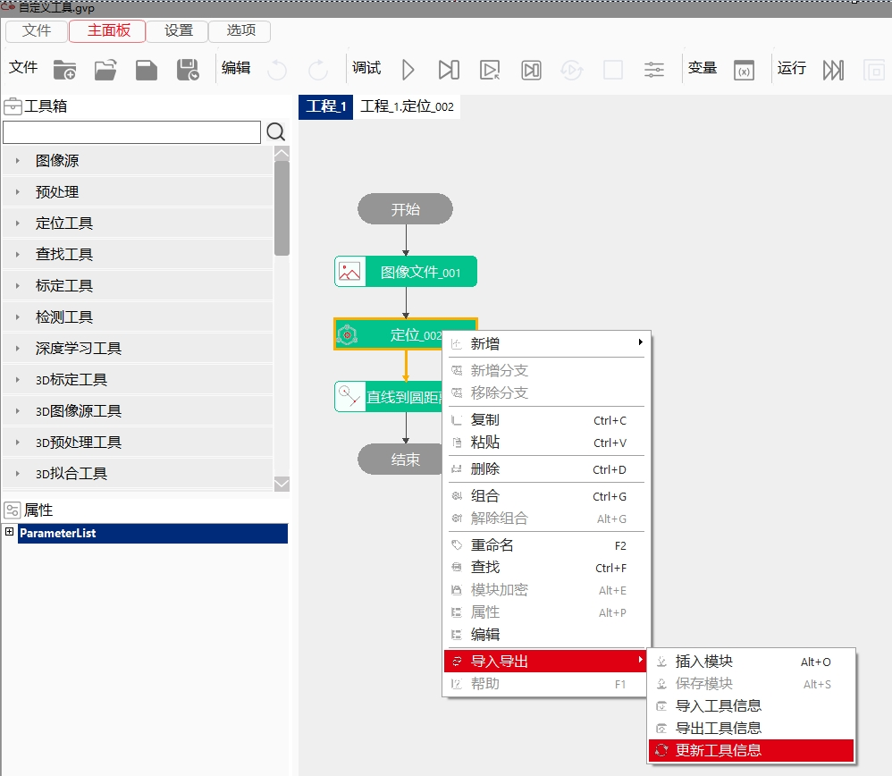
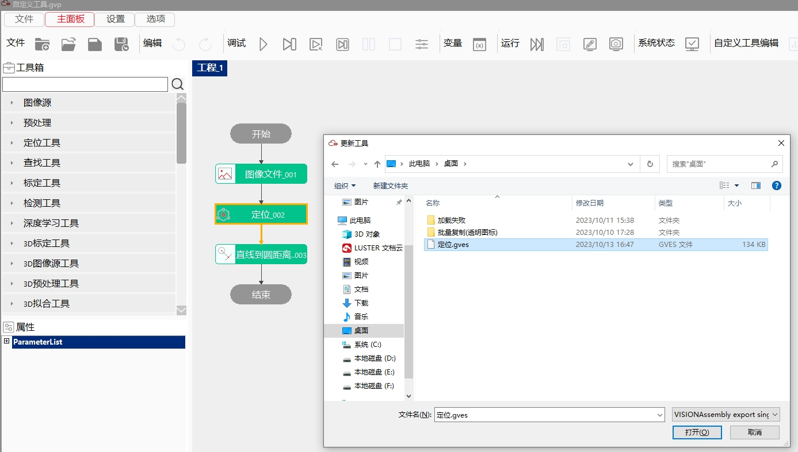
Chọn một đoạn quy trình trong sơ đồ quy trình, nhấp chuột phải chọn “Chuyển đổi thành tùy chỉnh công cụ”, có thể nhanh chóng tạo tùy chỉnh công cụ. Sau khi tạo tùy chỉnh công cụ, đoạn quy trình đã chọn sẽ bị xóa, tùy chỉnh công cụ sẽ thay thế vào vị trí tương ứng. Sau khi chuyển đổi không hỗ trợ hoàn tác. Trước mỗi lần chuyển đổi, tốt nhất nên sao lưu dự án trước.
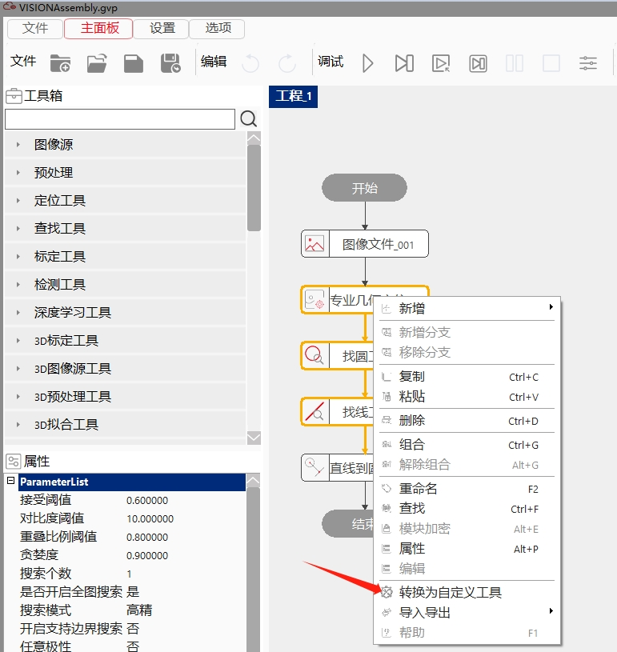
Đoạn quy trình được chọn cần đáp ứng các yêu cầu sau thì mới có thể chuyển đổi thành tùy chỉnh công cụ, nếu không sẽ hiện thông báo không thể hoàn thành chuyển đổi:
（1）Số lượng công cụ hoặc nguyên tố được chọn phải lớn hơn hoặc bằng hai, số lượng công cụ phải nhỏ hơn hoặc bằng 100;
（2）Đoạn quy trình được chọn không được chứa tùy chỉnh công cụ;
（3）Đoạn quy trình được chọn không được chứa công cụ không được tùy chỉnh công cụ hỗ trợ, danh sách công cụ cụ thể xem trong phần Câu hỏi thường gặp: Danh sách công cụ không được tùy chỉnh công cụ hỗ trợ;
（4）Đoạn quy trình được chọn không được chứa công cụ tạo thất bại, bị hỏng hoặc trạng thái bất thường;
（5）Đoạn quy trình được chọn không được chứa công cụ bị thu gọn hoặc mã hóa, tổ hợp phải được mở rộng (sau khi chuyển đổi, đường viền khung tổ hợp sẽ bị xóa).
Khi công cụ script, biểu thức, công cụ tạo văn bản được chọn, nhưng công cụ chứa tham số mà chúng truy cập chưa được chọn, sau khi chuyển đổi công cụ script, biểu thức, công cụ tạo văn bản sẽ không truy cập được tham số, sẽ hiện thông báo, và sau chuyển đổi công cụ script, biểu thức, công cụ tạo văn bản sẽ báo lỗi; khi công cụ script, biểu thức, công cụ tạo văn bản, công cụ xuất dữ liệu chưa được chọn, nhưng công cụ chứa tham số mà chúng truy cập đã được chọn, sau khi chuyển đổi công cụ script, biểu thức, công cụ tạo văn bản, công cụ xuất dữ liệu cũng sẽ không truy cập được tham số, sẽ hiện thông báo, và sau chuyển đổi chúng sẽ báo lỗi. Khuyến nghị khi chọn công cụ script, biểu thức, công cụ tạo văn bản, nên đồng thời chọn công cụ chứa tham số mà chúng truy cập, như vậy sẽ không xuất hiện vấn đề không truy cập được sau chuyển đổi. Nếu không thì chỉ có thể sửa thủ công sau khi chuyển đổi.
Khi chuỗi liên kết tham số của công cụ được chọn liên kết với biến, hoặc công cụ script, biểu thức, công cụ xuất dữ liệu được chọn truy cập biến, sẽ tự động tạo chuỗi tham số của tùy chỉnh công cụ và tự động liên kết với biến được truy cập; bên trong tùy chỉnh công cụ, chuỗi tham số được tạo sẽ thay thế biến. Khi công cụ script hoặc biểu thức sửa giá trị biến, sau chuyển đổi sẽ hiện thông báo gán tham số của tùy chỉnh công cụ mới tạo cho biến chỉ định.
Lưu ý quan trọng
Nguồn hình ảnh Cấu hình nguồn hình ảnh Công cụ thu thập hình ảnh Công cụ nguồn hình ảnh Tệp hình ảnh Thư mục hình ảnh Công cụ lưu hình ảnh Công cụ chụp màn hình Công cụ ghép và lưu nhiều hình ảnh
Công cụ giao tiếp Công cụ nhận giao tiếp Công cụ gửi giao tiếp Công cụ lấy trạng thái cổng giao tiếp
Công cụ cấu hình Công cụ điều khiển nguồn sáng Công cụ điều khiển nguồn sáng một pha Công cụ thu thập dữ liệu Công cụ cập nhật cơ sở dữ liệu Công cụ truy vấn cơ sở dữ liệu Công cụ truy vấn mảng cơ sở dữ liệu Công cụ thống kê truy vấn cơ sở dữ liệu Công cụ thiết lập chế độ làm việc của camera Công cụ thu thập dữ liệu sản xuất Công cụ thiết lập tham số camera Công cụ khôi phục trạng thái camera
Công cụ hiển thị và định dạng Công cụ tạo thư mục Công cụ xóa sạch view Công cụ báo cáo thông báo Công cụ tạo tệp Excel Công cụ ghi văn bản TXT Công cụ xuất dữ liệu Công cụ cấu hình nguồn dữ liệu Công cụ tạo mảng đồ họa Công cụ ghi dữ liệu theo mẫu Excel Công cụ lưu trữ dữ liệu MDB Công cụ phân tích và nhập tệp
Công cụ 3D Công cụ thu thập hình ảnh 3D Công cụ thiết lập camera 3D Công cụ chuyển đổi định dạng 3D Công cụ ghép nối đa cảm biến Công cụ so sánh mô hình CAD chuẩn
Khác Công cụ thực thi lệnh xử lý hàng loạt Công cụ đầu vào DI Công cụ đầu ra DO
Công cụ học sâu Công cụ kiểm tra phân loại Công cụ kiểm tra phân đoạn Công cụ kiểm tra phát hiện
Người dùng tự định nghĩa
Mặc định có thời gian thực thi và kết quả thực thi. Các tham số khác do người dùng tự định nghĩa.
参见“\Samples\自定义工具.gvp”。